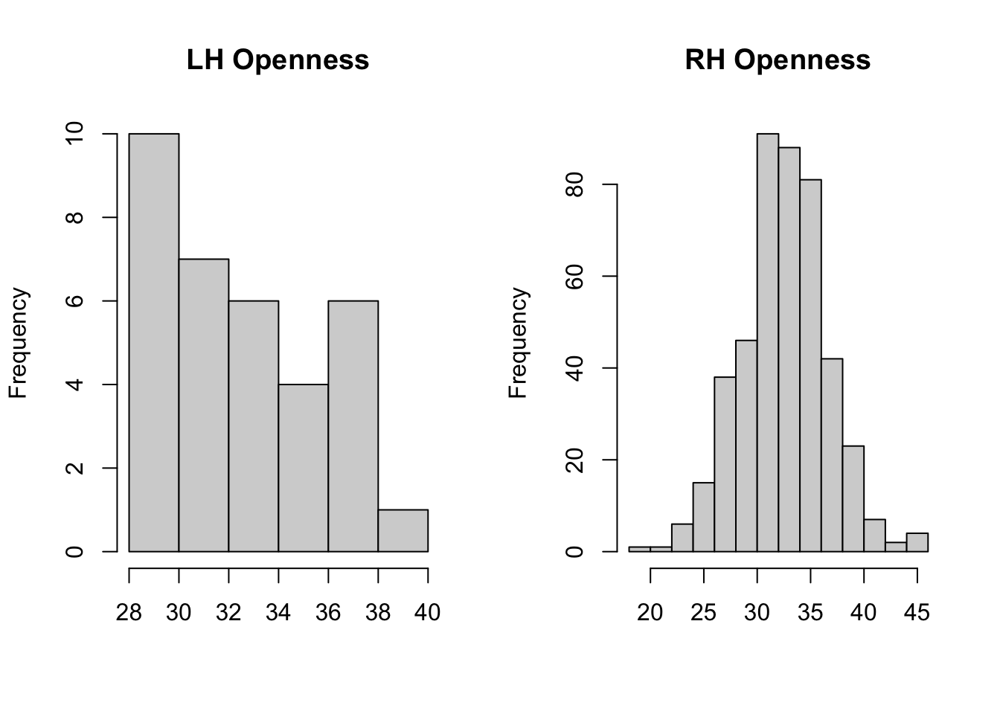
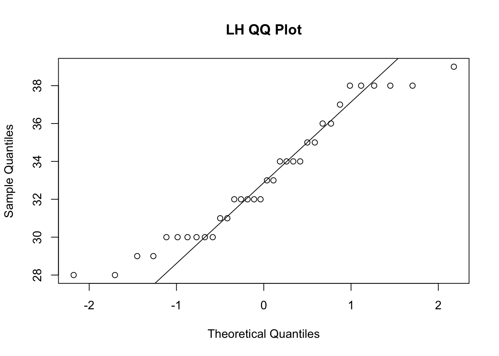
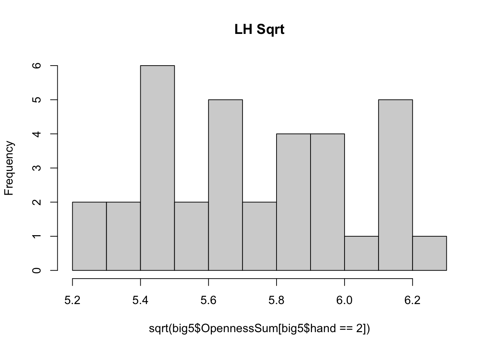
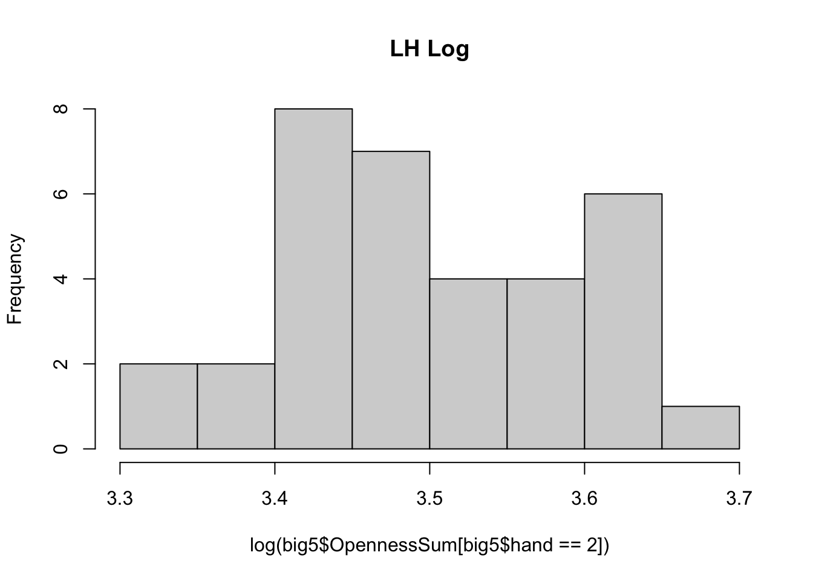
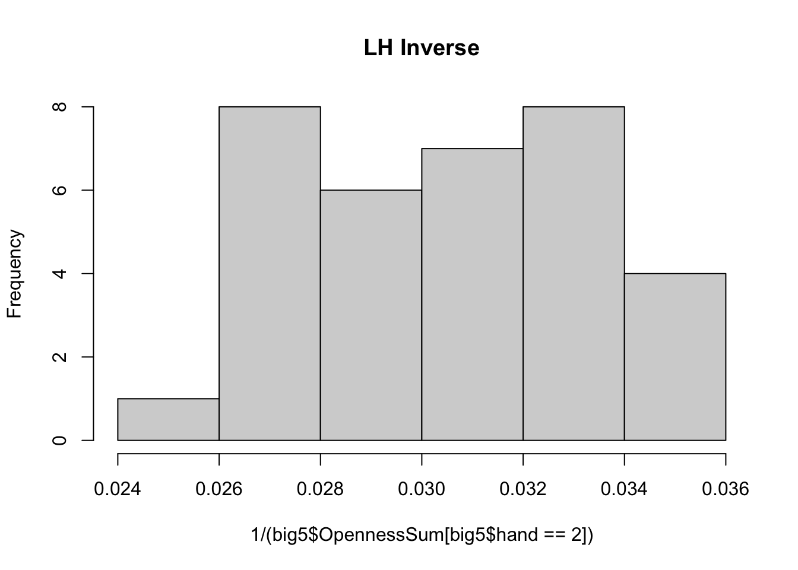

4 Two-Sample T-Tests
Many of you will be interested in testing whether you have significant differences across the means of two groups. This question is best answered by a t-test. Let’s say I want to test whether right-handed folks (hand = 1) have a significant mean difference in Openness to Experience (OpennessSum) compared to those who are left handed (hand = 2).
Our null hypothesis is the following:
\[H_0: \mu_{Righthanded} = \mu_{Lefthanded} \] Our null hypothesis is always that there are no differences between the groups. Our mean of Openness for right-handed folks is the same as our mean for left-handed folks.
Our alternative hypothesis is the following:
\[H_A: \mu_{Righthanded} \neq \mu_{Lefthanded} \] Since we have a nondirectional hypothesis, our alternative is that the means of the two groups are unequal, with no statement about which group might have a greater mean.
Before we run the analyses, we need to make sure our data meet a certain set of assumptions. This is not an exhaustive list of the available techniques to check the assumptions for a t-test, but an illustration of some common technqiues.
4.1 T-test Assumptions
The assumptions of a two-sample t-test are:
- Normality: Continuous outcome data should be normally distributed in each group
- Homogeneity of Variances/Equal Variances: The variances of each group are equal
- Independence of Groups: The two groups being tested are unrelated to each other (e.g., Group membership is mutually exclusive– one cannot belong to both groups)
4.1.1 Normality
To examine normality, we can look at histograms of the outcome variable subsetted by our groups:
par(mfrow = c(1,2)) ##plots graphs together
hist(big5$OpennessSum[big5$hand == 2], #left = 2
main= "LH Openness",
xlab = "")
hist(big5$OpennessSum[big5$hand == 1], ##right = 1
main= "RH Openness",
xlab = "") 
We can also look a graph called a Quantile-Quantile, or QQ-plot. QQ-plots graph your actual data against what your data should look like if it was normally distributed:
##Left-Handed
qqnorm(big5$OpennessSum[big5$hand == 2], main = "LH QQ Plot")
qqline(big5$OpennessSum[big5$hand == 2])
##Right-Handed
qqnorm(big5$OpennessSum[big5$hand == 1], main = "RH QQ Plot")
qqline(big5$OpennessSum[big5$hand == 1])
Ideally, the points in a QQ-plot should hug the diagonal line as closely as possible. It is clear that the QQ-plot for left-handed folks has deviations from normality.
Sometimes, visual examinations of normality might feel ambiguous. We can also use a quantitative assessment, such as a Shapiro-Wilks test:
shapiro.test(big5$OpennessSum[big5$hand == 2])##
## Shapiro-Wilk normality test
##
## data: big5$OpennessSum[big5$hand == 2]
## W = 0.93615, p-value = 0.04741shapiro.test(big5$OpennessSum[big5$hand == 1])##
## Shapiro-Wilk normality test
##
## data: big5$OpennessSum[big5$hand == 1]
## W = 0.98997, p-value = 0.003938A significant result from Shapiro-Wilk normality test means that the distribution you’re testing significantly deviates from normality. Here, our distribution of our outcome across right-handed individuals is significant, p = .003. Since it’s nonnormal, we’ll try to address the issue using transformations.
Our distribution of the outcome across left-handed individuals is p = .047, right on our p = .05 cutoff. Different researchers might make different decisions about whether or not to consider this normal. For this example, we will treat this group as normally distributed.
For the right-handed group, we will try a series of data transformations to try and make the distribution more normal. While only three transformations are shown here, there are many to choose from. Three common trasnformations are to take the square root of the outcome variable, take the log of the outcome variable, and take the inverse of the outcome variable:
hist(sqrt(big5$OpennessSum[big5$hand == 2]), main = "LH Sqrt")
hist(log(big5$OpennessSum[big5$hand == 2]), main = "LH Log")
hist(1/(big5$OpennessSum[big5$hand == 2]), main = "LH Inverse")
It looks like the transformations don’t quite make our distribution of left-handed folks normally distributed. Let’s check the sample sizes of our groups:
big5 %>% ##take our data... AND THEN
group_by(hand) %>% ##group by handedness... AND THEN
summarize(samp = length(OpennessSum)) ##count the observations in each group ##and summarize in a tableIt looks like we have 34 left-handed people in our sample. While we won’t get into detail here, we are going to rely on a certain set of properties about sampling distributions of means, called the Central Limit Theorem (CLT). According to CLT, the sampling distribution of means will be normally distributed even if our data are not given a sufficient sample size (30 per group). Recall that we use estimates of the variability of the sampling distribution of means (called the standard error) to conduct the t-test.
Since we have a sufficient sample size (n for each group is at least 30), we will proceed with our analysis.
4.1.2 Homogeneity of Variance (HOV)
Homogeneity of Variances (HOV) is the assumption that the variances of the two groups are equal. We can look at the variances of the groups using var():
var(big5$OpennessSum[big5$hand == 2], na.rm = TRUE)## [1] 10.77362var(big5$OpennessSum[big5$hand == 1], na.rm = TRUE)## [1] 16.18325It looks like the variances for our left- and right-handed groups are unequal.
In R, the default for the t-test analysis is called a “Welch’s t-test”. A Welch’s t-test is a test that is already corrected for violations of the HOV assumption. It is very common in psychological research to simply use this correction for t-tests by default, rather than formally assess whether data meet HOV requirements. That is our recommendation as well, and will be how we conduct the final analysis.
4.1.3 Independence of Groups
For the two samples independent t-test, it is required that the groups are independent from each other. Technically, this means that the probability of an individual being selected into one group does not affect the probability of another individual to be selected into the other group. More plainly, we can think about this assumption in terms of mutual exclusivity– in our example, people who are right-handed cannot also be left-handed, and vice versa. This means we meet the assumption of independence of groups.
Sometimes we are interested in mean comparisons across nonindependent (or paired) groups- for example, we might be want to compare pre- and post- test scores to see how much people have learned from a lecture or class. In this case, the groups are no longer independent. The individuals who took the pretest are the same individuals who took the posttest. Other examples of paired data might be comparing specific dyads– let’s say you wanted to compare differences in extraversion between mothers and their daughters. Because selection of a participant in the “mothers” group necessitates a specific individual into the “daughters” group, the data would be paired. You can run a version of a t-test for paired data by changing the paired argument in t.test to TRUE.
4.2 Conducting and Interpreting the t-test
Before we conduct the final test, we have one issue– the hand variable in this dataset actually has three levels: right-handed (1), left-handed (2), and ambidextrous (3). Recall that a t-test can only be run with a single continuous outcome and a dichotomous (two-level) categorical predictor. If you’re interested in looking at more than 2 groups, review section 5 of this handout. The code below creates a new version of our original dataset (called tdat) with the ambidextrous cases removed:
tdat <- big5[big5$hand != 3,]Now, we can use that new data to run our analysis. The code below runs the same t-test twice. The first version of the code has some of the relevant default arguments explicit in the command: Use ?t.test to review all of the available arguments. Below is a list of arguments shown here, and what they do:
var.equal = FALSE: Implements the Welch’s t-test correction for violation of HOVpaired = FALSE: Dictates that we are running a two-sample, independent groups t-test. If there is a dependency between the two groups you wish to compare, change this argument to TRUEalternative = "two.sided": Runs a nondirectional, two-tailed test.
?t.test
##Explicit
t.test(OpennessSum ~ hand, data=tdat, var.equal = FALSE, paired = FALSE, alternative = "two.sided")##
## Welch Two Sample t-test
##
## data: OpennessSum by hand
## t = -0.095859, df = 40.969, p-value = 0.9241
## alternative hypothesis: true difference in means between group 1 and group 2 is not equal to 0
## 95 percent confidence interval:
## -1.257291 1.143345
## sample estimates:
## mean in group 1 mean in group 2
## 33.06067 33.11765##Rely on Defaults
t.test(OpennessSum ~ hand, data=tdat)##
## Welch Two Sample t-test
##
## data: OpennessSum by hand
## t = -0.095859, df = 40.969, p-value = 0.9241
## alternative hypothesis: true difference in means between group 1 and group 2 is not equal to 0
## 95 percent confidence interval:
## -1.257291 1.143345
## sample estimates:
## mean in group 1 mean in group 2
## 33.06067 33.11765The t-test output shows us our test statistic, our (corrected) degrees of freedom, the p-value associated with our test, a confidence interval, and the mean estimates for each group in our sample. Since the p-value associated with our t-test (p = 0.92) is above the .05 cutoff, we fail to reject the null hypothesis and cannot conclude there are differences in Openness between left- and right- handed groups. An example APA writeup is below:
A Welch’s two-sample t-test suggests that there are no differences in Openness among left-handed (M = 33.11, SD = 3.28) and right-handed (M = 33.06, SD = 4.02) individuals, t(40.96) = -0.09, p = 0.92.
##get standard deviations for writeup
sd(big5$OpennessSum[big5$hand == 2], na.rm = TRUE)## [1] 3.282319sd(big5$OpennessSum[big5$hand == 1], na.rm = TRUE)## [1] 4.022841Although it’s unusual in psychological research, you may want to test a directional hypothesis for your project. Let’s say our hypothesis is that left-handed people have higher Openness than right-handed people. Our t-test changes as such:
t.test(OpennessSum ~ hand, data= tdat, alternative = "less")##
## Welch Two Sample t-test
##
## data: OpennessSum by hand
## t = -0.095859, df = 40.969, p-value = 0.462
## alternative hypothesis: true difference in means between group 1 and group 2 is less than 0
## 95 percent confidence interval:
## -Inf 0.9432432
## sample estimates:
## mean in group 1 mean in group 2
## 33.06067 33.11765You may be wondering– if our hypothesis is that left-handed folks are MORE open that right-handed folks, why did we change our alternative argument to “less”? The default in R is to read groups in alphanumerical order. In this example, the right-handed group = 1 and the left-handed group = 2. You can think of R reading the above code as “group 1 has a lower mean than group 2”, which is equivalent to our hypothesis that states “group 2 has a higher mean than group 1.” If you do decide to use a directional test, make sure the direction aligns with how R is reading your groups!